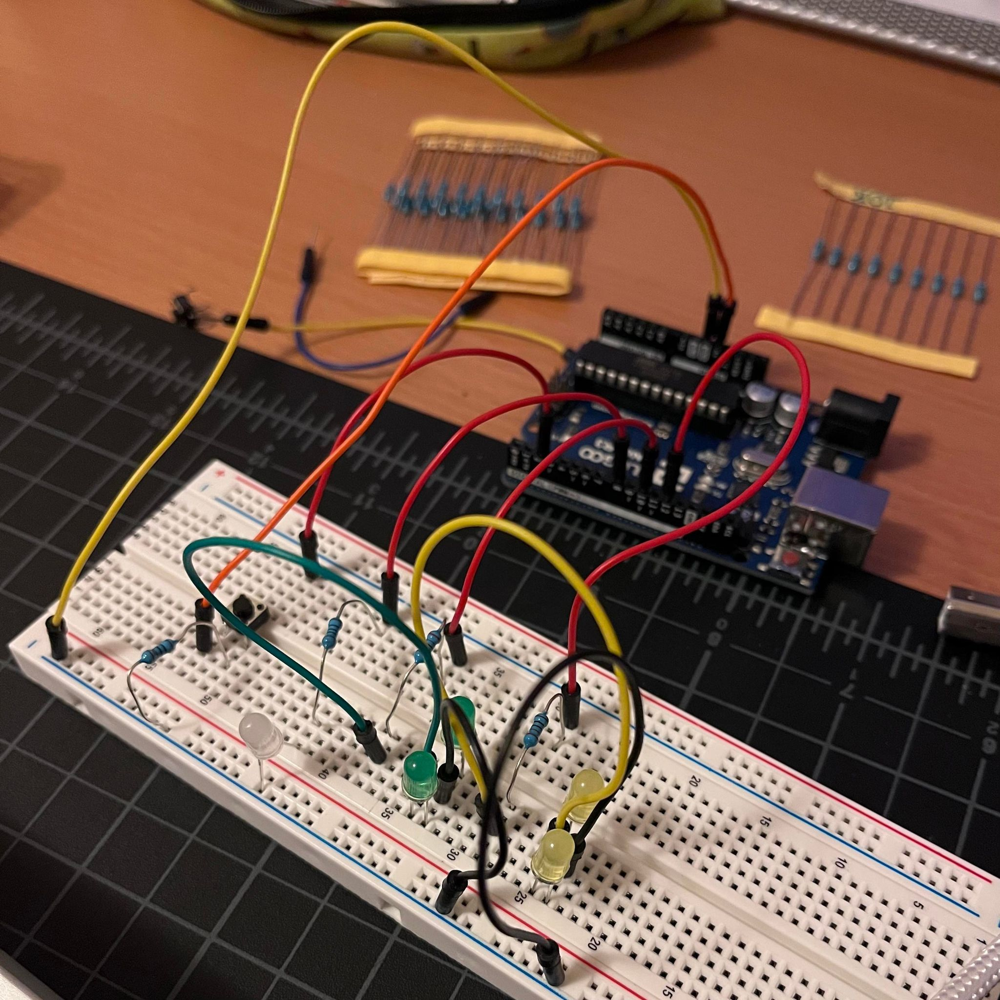

This assignment fades, the last one blinked - why not both?
The voltage drop across yellow and green LEDs are all 1.8V, and each pin supplies 5V.
5V - 1.8V = 3.2V
And we want to run each LED with 20 mA of current, which is 0.02A
So with V = IR (ohm's law):
3.2V = 0.02A * R
R = 160Ω (or more)
I opted to use 220 ohm resistors for each LED because that's the closest
stock resistor in the kit that is greater than 160Ω.
If I used one under 160Ω, that would be too much current for the LEDs.
The voltage drop across a white LED is 3.3V.
5V - 3.3V = 1.7V
1.7V = 0.02A * R (assuming we want 20mA of current for this LED as well)
R = 85Ω (or more) - so I used a 100Ω resistor for the white LED.
I didn't want an infinite amount of current running through when the button was unpressed, so I just put in a really large resistor (10kΩ).
It was also the resistor we used in class, so I figured it'd be a good bet.
Although I think the 5V pin is rated for 800mA - but USB ports only output 500mA.
So that calculation would be something like: 5V = 0.8A * R so R = 6.25Ω (or larger)
Pin 2 goes to the button, and pin 8/10/12 connects to the white/green/yellow LEDs, respectively.
Each element is also connected to an appropriate resistor -
(10kΩ for the button, 100Ω for the white light and 350Ω for the green and yellow lights)
// White LED in pin (8)
int white = 8;
// Green LEDs in pin (10)
int green = 10;
// Yellow LEDs in pin (12)
int yellow = 12;
// Button in pin (2)
int buttonPin = 2;
// Initial brightness of LED for fade function
int brightness = 0;
// Initial state of LED for fade function
int ledState = LOW;
// Storing when the last time the blinking LED was updated
unsigned long previousMillis = 0;
// Interval at which I want the LED to blink (half a second)
const long interval = 500;
// Setting the pins as input/output
void setup() {
// Setting the white led pin (8) as output
pinMode(white, OUTPUT);
// Setting the green led pin (10) as output
pinMode(green, OUTPUT);
// Setting the yellow led pin (12) as output
pinMode(yellow, OUTPUT);
// Setting the button pin (2) as input
pinMode(buttonPin, INPUT);
}
// Fade function for the main loop, takes pin number and amount to fade by in each loop iteration
void fade(int pin, int fadeAmount) {
// Setting pin brightness
analogWrite(pin, brightness);
// Incrementing brightness
brightness = brightness + fadeAmount;
// Waiting 30 miliseconds so the fading doesn't happen insanely fast
delay(30);
}
// Main loop
void loop() {
// Reading whether the button is pressed or not
byte buttonState = digitalRead(buttonPin);
// I used the blink without delay arduino example for this
// Setting currentMillis to millis, checks current time
unsigned long currentMillis = millis();
// Checking if the current time subtracted from the last time millis was updated is longer than the desired interval
// Essentially, checking if the desired interval between blinks has happened or not
if (currentMillis - previousMillis >= interval) {
// Saving the last time the LED blinked
previousMillis = currentMillis;
// Checking if ledState is low (off)
if (ledState == LOW) {
// If led is off, setting ledState to high
ledState = HIGH;
// If led is on, setting ledState to low
} else {
ledState = LOW;
}
// Setting the high/low state of of yellow led pin (12)
digitalWrite(yellow, ledState);
}
// Checking if the button is pressed
if (buttonState == HIGH) {
// Turns on the white LED
digitalWrite(white, LOW);
// Running the fade loop for the green LEDs
fade(green, 5);
// If the button isn't pressed
} else {
// Turn white LED on
digitalWrite(white, HIGH);
// Turn green LED off
digitalWrite(green, LOW);
// Turn yellow LED off
digitalWrite(yellow, LOW);
}
}

The white light stays on when the button is unpressed.
Upon pressing the button, the green lights gradually fade into brightness while the yellow lights blink.
The button is released and the cycle repeats!